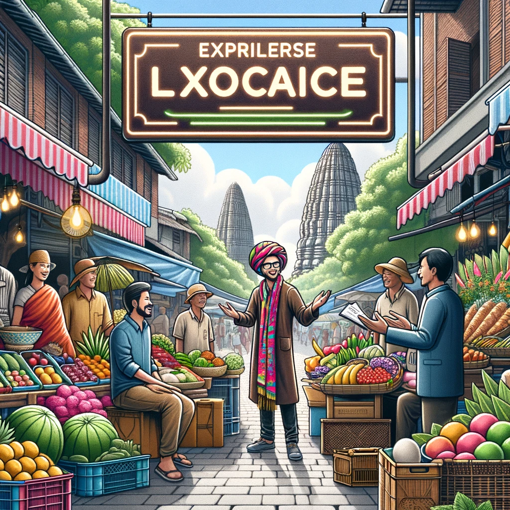
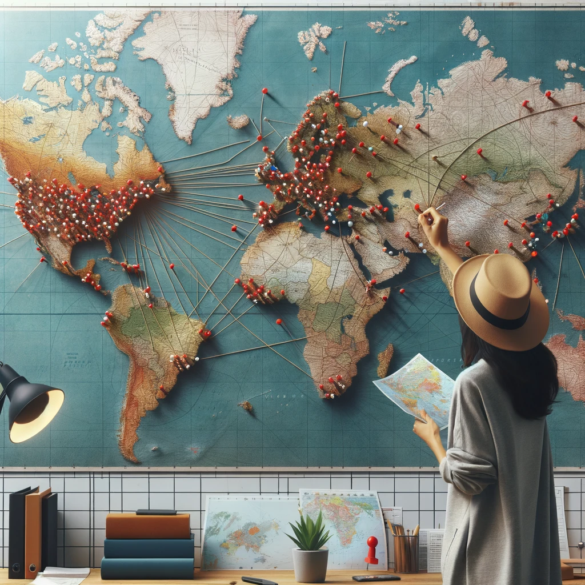
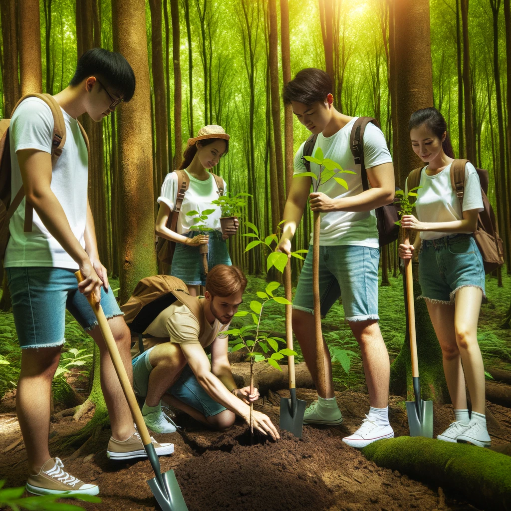
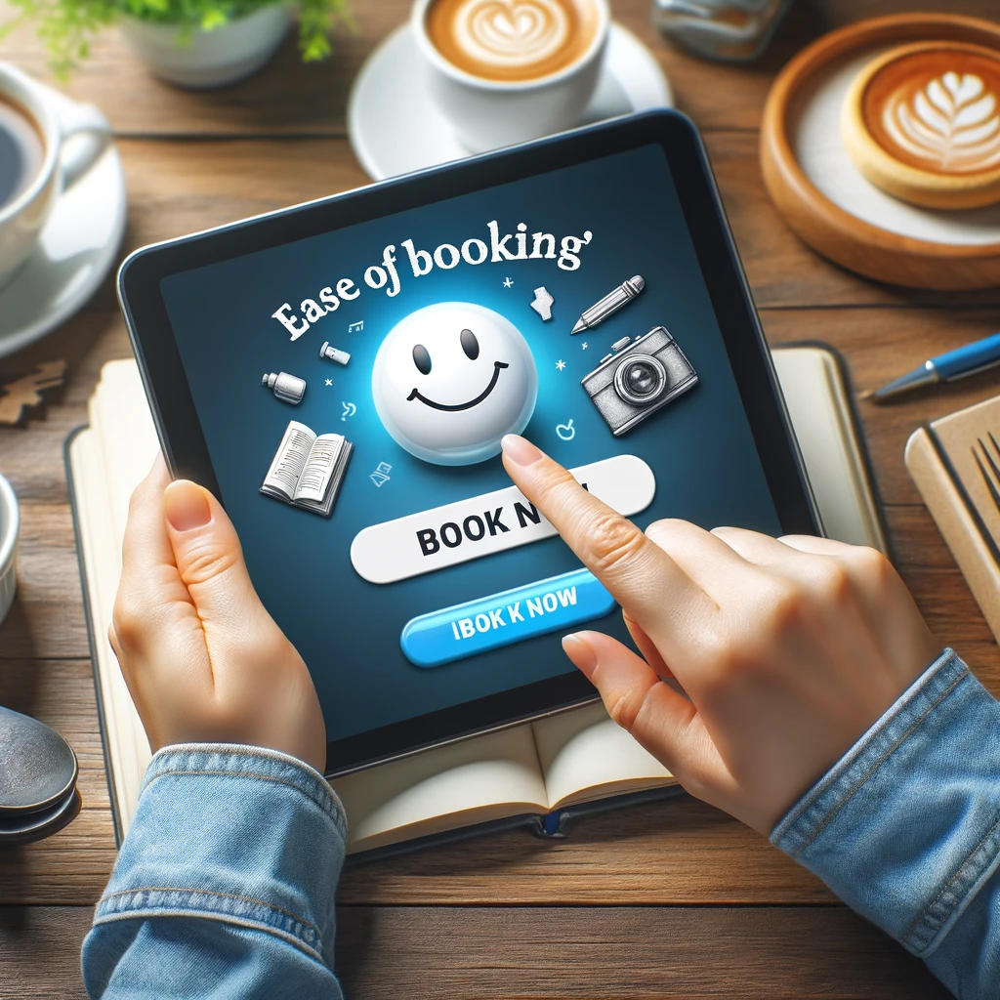
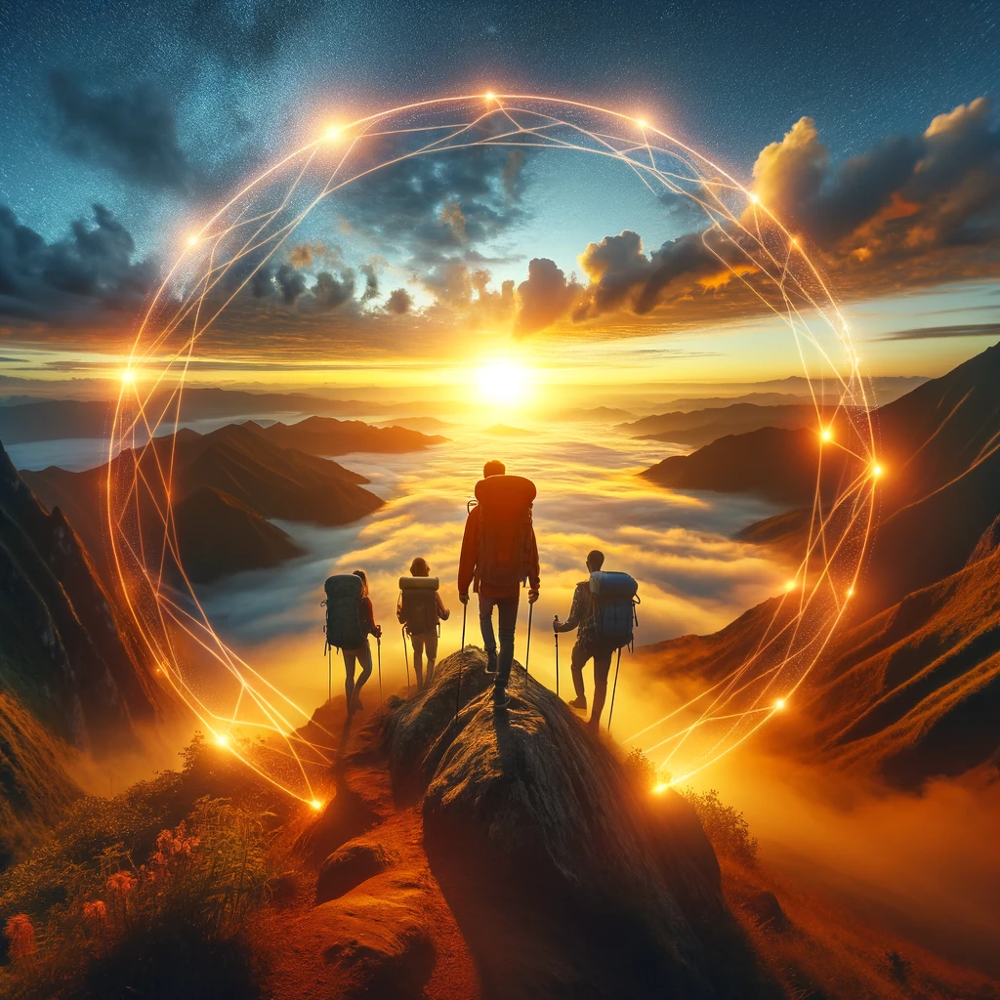

À Rêve d'Ailleurs, nous croyons fermement que le voyage va bien au-delà de la simple exploration de nouveaux lieux. Pour nous, voyager, c'est une aventure immersive qui enrichit l'âme, élargit les horizons et crée des liens inestimables avec le monde qui nous entoure.
Fondée avec une passion profonde pour l'exploration et la découverte, notre agence s'est engagée à créer des expériences de voyage authentiques et significatives pour nos clients. Que ce soit en découvrant des trésors culturels cachés, en s'imprégnant de la beauté naturelle de destinations éloignées, ou en partageant des moments de convivialité avec des communautés locales, nous nous efforçons de faire de chaque voyage une source d'inspiration et de joie.
Chez Rêve d'Ailleurs, nous mettons un point d'honneur à promouvoir un tourisme responsable et respectueux de l'environnement, en collaborant avec des partenaires locaux engagés dans la préservation de leur patrimoine naturel et culturel. Nous sommes fiers de soutenir les initiatives éco-responsables qui contribuent à la préservation des destinations que nous aimons tant.
Plus qu'une simple agence de voyage, Rêve d'Ailleurs est une communauté de voyageurs passionnés, unissant des personnes de tous horizons autour d'une même ambition : explorer le monde avec curiosité, compassion et ouverture d'esprit.
Rejoignez-nous dans cette incroyable aventure et laissez-nous vous aider à réaliser vos rêves de voyage les plus audacieux.

Expertise Locale
Notre connaissance approfondie de chaque destination transforme chaque voyage en une expérience inoubliable.
Service Clientèle Exceptionnel
À votre écoute 24/7, nous sommes toujours là pour assurer votre confort et votre sécurité
Rapport Qualité-Prix
Nous vous offrons le meilleur de l'aventure et du confort à des prix qui respectent votre budget.

Personnalisation des Voyages
Chaque itinéraire est soigneusement conçu pour répondre à vos passions et à vos intérêts uniques.

Responsabilité Écologique
Engagés dans le tourisme durable, nous contribuons à la préservation des merveilles naturelles pour les générations futures.

Facilité de Réservation
Avec notre système de réservation simplifié, planifier votre prochaine évasion est un jeu d'enfant
Connexions Globales
Grâce à notre réseau mondial, nous ouvrons les portes des destinations les plus prisées et secrètes.
Garantie de Sécurité
Votre sécurité est notre priorité; nous veillons sur chaque détail pour que vous voyagiez l'esprit tranquille

Experience imouvante
Nous repoussons les limites du voyage traditionnel pour vous offrir des expériences avant-gardistes et mémorables.